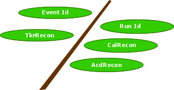

|
This page last changed on Oct 13, 2004 by heather.
All Gleam output is in ROOT format. To read and analyze these files you will need to use an application capable of reading in ROOT files. The easiest path is to use the ROOT analysis environment. For more general information about ROOT and how we use it in GLAST, please see the GLAST ROOT home page: http://www-glast.slac.stanford.edu/software/root The top-level class for the reconstruction data is ReconEvent. This class contains the recon data for one event:
The Recon tree has one branch, ReconEvent. All of the reconstruction data is contained within this single branch. 
| Method | Description | Return Value |
| UInt_t getEventId( ) | Returns the Event Id | UInt_t |
| UInt_t getRunId( ) | Returns the Run Id | UInt_t |
| AcdRecon* getAcdRecon( ) | Returns a pointer to the AcdRecon | AcdRecon* |
| CalRecon* getCalRecon( ) | Returns a pointer to the CalRecon | CalRecon* |
| TkrRecon* getTkrRecon( ) | Returns a pointer to the TkrRecon | TkrRecon* |
| UInt_t getEventFlags( ) | Returns the event flags associated with this event. O (zero) denotes a good event, non-zero a bad event. Currently the only type of bad event recognized is a bad event Sequence denoted by eventFlags == 1 | UInt_t |
| Bool_t goodEvent( ) | Returns kTRUE if the event flag is zero, kFALSE otherwise | Bool_t |
| Bool_t badEvent( ) | Returns kTRUE if the event flag is non-zero, kFALSE otherwise | Bool_t |
| Bool_t badEventSeq( ) | Returns kTRUE if the event sequence bit is high in event flag | Bool_t |
| Method | Description | Return Value |
| Double_t getEnergy() | Returns total energy deposited in the ACD system | Double_t |
| Int_t getTileCount() | Returns total number of ACD tiles above veto threshold | Int_t |
| Double_t getGammaDoca() | Returns the gamma DOCA (Distance of Closest Approach) | Double_t |
| Double_t getDoca() | Returns the min DOCA | Double_t |
| Double_t getActiveDist() | Returns minimum Active Distance for all tracks and ACD tiles above veto threshold | Double_t |
| AcdId& getMinDocaId() | Returns the Id of the Acd Tile associated with the minimum DOCA | AcdId& |
| std::vector<Double_t>& getRowDocaCol() | Returns a vector of doubles, containing the minimum DOCA associated with regions of the ACD (top, row0, row1, row2, row3) | std::vector<Double_t>& |
| Double_t getRowDoca(UInt_t i) | Returns the ith DOCA associated with a region | Double_t |
| std::vector<Double_t>& getRowActDistCol() | Returns a vector of doubles, containing the minimum Active Distance values associated with regions of the ACD (top, row0, row1, row2, row3 | std::vector<Double_t>& |
| Double_t getRowActDist(UInt_t i) | Returns the ith Active Distance associated with a region | Double_t |
| Method | Description | Return Value |
| TObjArray* getCalClusterCol( ) | | TObjArray* of CalCluster |
| TObjArray* getCalXtalRecCol( ) | | TObjArray* of CalXtalRecData |
| Method | Description | Return Value |
| const CalXtalId::CalTrigMode getMode( ) | Returns the readout mode associated with this crystal | const CalXtalId::CalTrigMode |
| const CalXtalId getPackedId( ) | Returns the crystal identifier | const CalXtalId |
| Char_t getRange(Short_t readoutIndex, CalXtalId::XtalFace face) | Returns the range for a particular face and readout | Char_t |
| Double_t getEnergy(Short_t readoutIndex, CalXtalId::XtalFace face) | Returns the reconstructed energy associated with a particular face and readout of the crystal | Double_t |
| Double_t getEnergy( ) | Returns average energy of two faces for the best range | Double_t |
| const TVector3& getPosition( ) | Returns the position for the best range | const TVector& |
| const CalRangeRecData* getRangeRecData(Short_t readoutIndex) | Returns reconstructed data from both ends of selected readout | const CalRangeRecData* |
| Double_t getEnergySelectedRange(CalXtalId::AdcRange range, CalXtalId::XtalFace face) | Returns pulse height from selected range | Double_t |
| Method | Description | Return Value |
| const TVector3& getPosition() | | const TVector3& |
| Double_t getEnergy(CalXtalId::XtalFace face) | Return energy associated with specified face | Double_t |
| Char_t getRange(CalXtalId::XtalFace face) | Returns range associated with specified face | Char_t |
| Method | Description | Return Value |
| Double_t getEnergyLeak( ) | | Double_t |
| Double_t getEnergyCorrected( ) | | Double_t |
| Double_t getEneLayer(int i) | | Double_t |
| UInt_t getNumEneLayer( ) | | UInt_t |
| const TVector3& getPosLayer(int i) | | const TVector3& |
| UInt_t getNumPosLayer( ) | | UInt_t |
| const TVector3& getRmsLayer(int i) | | const TVector3& |
| UInt_t getNumRmsLayer( ) | | UInt_t |
| const std::vector<Double_t>& getEneLayer( ) | | const std::vector<Double_t>& |
| const std::vector<TVector3>& getPosLayer( ) | | const std::vector<TVector3>& |
| const std::vector<TVector3>& getRmsLayer( ) | | const std::vector<TVector3>& |
| Double_t getRmsLong( ) | | Double_t |
| Double_t getRmsTrans( ) | | Double_t |
| Double_t getTransvOffset( ) | | Double_t |
| const TVector3& getPosition( ) | | const TVector3& |
| const TVector3& getDirection( ) | | const TVector3& |
| Double_t getFitEnergy( ) | | Double_t |
| Double_t getProfChisq( ) | | Double_t |
| Double_t getCsiAlpha( ) | | Double_t |
| Double_t getCsiLambda( ) | | Double_t |
| Double_t getCsiStart( ) | | Double_t |
| Method | Description | Return Value |
| TObjArray getClusterCol() | Returns the collection of clusters | TObjArray of TkrCluster |
| TObjArray getTrackCandCol() | Returns the collection of candidate tracks | TObjArray of TkrCandTrack |
| TObjArray getTrackCol() | Returns the collection of reconstructed tracks | TObjArray of TkrTrack |
| TObjArray getVertexCol() | Returns the collection of vertices | TObjArray of TkrVertex |
| Method | Description | Return Value |
| getTower( ) | Returns the tower number containing this cluster | UInt_t |
| getId( ) | Returns id of the cluster, sequential in order of construction | UInt_t |
| getPlane( ) | plane id: this is the bi-layer number, but ordered backwards (0 at front) | UInt_t |
| getView( ) | Returns orientation of cluster:
X = 0 measures X
Y = 1 measures Y | view |
| getFirstStrip( ) | Returns the initial strip address of the cluster | UInt_t |
| getLastStrip( ) | Returns the final strip address of the cluster | UInt_t |
| getToT( ) | Returns Time Over Threshold for the cluster | UInt_t |
| getChip( ) | Returns the chip number, which is calculated using the strip id | Int_t |
| getStrip( ) | Returns center strip id in this cluster | Double_t |
| getSize( ) | Returns the size of this cluster | Double_t |
| getPosition( ) | Returns the position of the cluster | const TVector3& |
| hitFlagged( ) | returns true if the cluster has been flagged | bool |
| Method | Description | Return Value |
| getId( ) | | UInt_t |
| getQuality( ) | | Double_t |
| getEnergy( ) | | Double_t |
| getLayer( ) | | UInt_t |
| getTower( ) | | UInt_t |
| getPosition( ) | | TVector3 |
| getDirection( ) | | TVector3 |
| getNumHits( ) | | UInt_t |
| Method | Description | Return Value |
| getCovX0X0( ) | | Double_t |
| getCovSxSx( ) | | Double_t |
| getCovX0Sx( ) | | Double_t |
| getCovY0Y0( ) | | Double_t |
| getCovSySy( ) | | Double_t |
| getCovY0Sy( ) | | Double_t |
| Method | Description | Return Value |
| getHitType( ) | | TYPE
enum TYPEUnknown macro: {MEAS, FIT, PRED, SMOOTH, UNKNOWN} |
| getTkrParams( ) | | const TkrParams& |
| getTkrCovMat( ) | | const TkrCovMat& |
| Method | Description | Return Value |
| getIdHit( ) | | UInt_t |
| getIdTower( ) | | UInt_t |
| getIdPlane( ) | | UInt_t |
| getProjection( ) | | AXIS |
| getProjPlus( ) | | AXIS |
| getZplane( ) | | Double_t |
| getEnePlane( ) | | Double_t |
| getRadLen( ) | | Double_t |
| getActiveDist( ) | | Double_t |
| getHitMeas( ) | | const TkrFitHit& |
| getHitPred( ) | | const TkrFitHit& |
| getHitFit( ) | | const TkrFitHit& |
| getHitSmooth( ) | | const TkrFitHit& |
| getQmaterial( ) | | const TkrCovMat& |
| Method | Description | Return Value |
| getXPos( ) | | Double_t |
| getYPos( ) | | Double_t |
| getXSlope( ) | | Double_t |
| getYSlope( ) | | Double_t |
| Method | Description | Return Value |
| getQuality( ) | | Double_t |
| getEnergy(TKREND end) | | Double_t |
| getLayer(TKREND end) | | UInt_t |
| getTower(TKREND end) | | UInt_t |
| getTrackPar(TKREND end) | | const TkrParams* |
| getTrackParZ(TKREND end) | | Double_t |
| getTrackCov(TKREND end) | | const TkrCovMat* |
| getId( ) | | Int_t |
| getChiSq( ) | | Double_t |
| getChiSqSmooth( ) | | Double_t |
| getRmsResid( ) | | Double_t |
| getKalEnergy( ) | | Double_t |
| getKalThetaMS( ) | | Double_t |
| getXgaps( ) | | UInt_t |
| getYgaps() | | UInt_t |
| getXistGaps() | | UInt_t |
| getYistGaps() | | UInt_t |
| getEndHit(TKREND end) | | const TkrHitPlane* |
| getNumHits( ) | | UInt_t |
| Method | Description | Return Value |
| getId( ) | | Int_t |
| getQuality( ) | | Double_t |
| getEnergy( ) | | Double_t |
| getLayer( ) | | Int_t |
| getTower( ) | | Int_t |
| getPosition( ) | | const TVector3& |
| getDirection( ) | | const TVector3& |
| getTrackPar( ) | | const TkrParams& |
| getTrackParZ( ) | | Double_t |
| getTrackCov( ) | | const TkrCovMat& |
| getNumTracks( ) | | UInt_t |
| getTrackId(UInt_t idx) | | UInt_t |
Back to Top H. Kelly Last Modified: 2004-08-19 08:36:51 -0700
|
{kind=link}